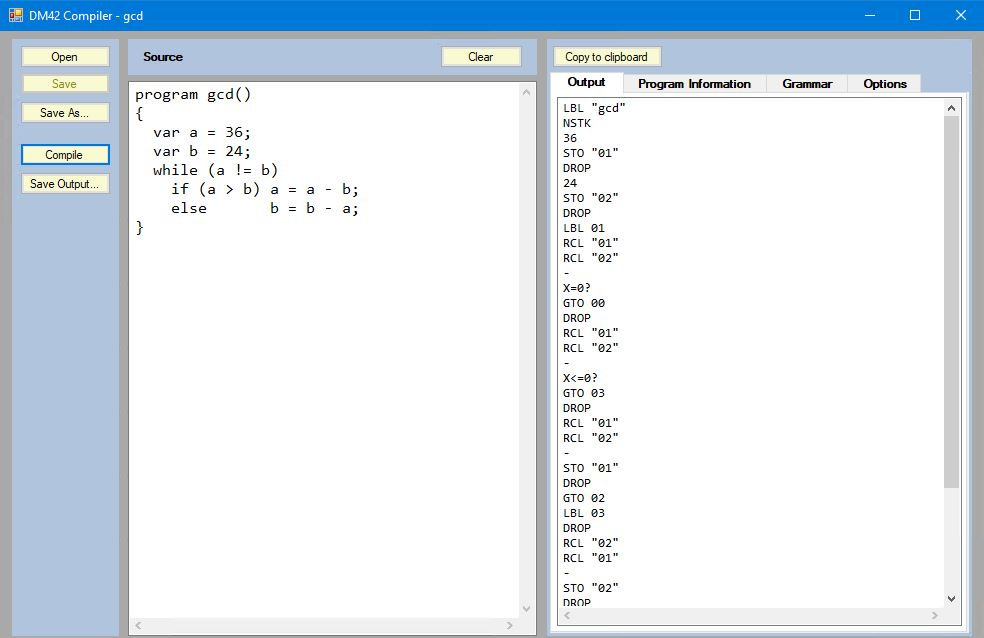
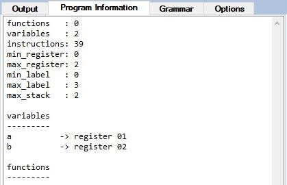
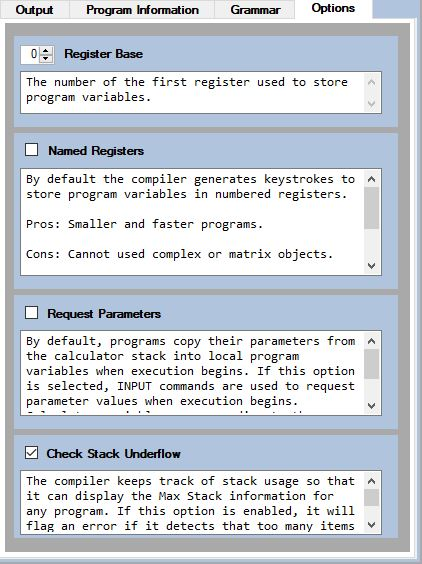

This compiler translates high-level language programs into keystrokes for the DM42 calculator. These programs will run on unmodified DM42 calculators – no firmware flashing required. Most programs will also run on the Free42 emulator provided they do not use any unsupported DM42 extensions. Compiled programs make use of the DM42's extended stack mode (NSTK). "Dynamic Stack Extension" should be enabled in the calculator's settings.
The following examples illustrate the high-level language supported.
program gcd()
{
var a = 36;
var b = 24;
while (a != b)
if (a > b) a = a - b;
else b = b – a;
return a;
}
Computes the greatest common divisor (gcd) of two numbers using Euclid's algorithm. The result is returned on the calculator's stack.
program gcd_as_function()
{
var a = 36;
var b = 24;
func gcd()
{
while (a != b)
if (a > b) a = a - b;
else b = b - a;
return a;
}
return gcd();
}
Here gcd is defined as a function, which is then called by the main program.
program lcm_with_parameters(a, b)
{
func gcd(x, y)
{
while (x != y)
if (x > y) x = x - y;
else y = y - x;
return x;
}
func lcm(x, y)
{
return x * (y / gcd(x, y));
}
return lcm(a, b);
}
In this example gcd is defined as a function with two parameters, which is then used by another function computing the lowest common multiple (lcm) of two values. Here the main program itself has parameters which are taken from the calculator's stack when the program is executed.
Programs can consume and return complex numbers...
program complex_test(a, b)
{
return complex(a^2, sin(b));
}
...and provide an easy way to define and manipulate matrices.
program matrix_test(a, b, c)
{
var m1 = matrix(
[a^2, 1, 1 ],
[1, b^2, 1 ],
[1, 1, c^2]
);
var m2 = matrix(
[1, 1, c^3],
[1, b^3, 1 ],
[a^3, 1, 1 ]
);
return determinant(transpose(m1 * m2));
}
Finally, here is a program to plot a graph of a function on the calculator's screen.
program plotter()
{
var x_max = recall("ResX") - 1;
var y_max = recall("ResY") - 1;
func f(x)
{
return (y_max / 2) * sin(8 * x);
}
func void plot()
{
var x0 = x_max / 2;
var y0 = y_max / 2;
v_line(x0);
h_line(y0);
for x = 0 to x_max do
{
var y = f(x - x0) + y0;
if (y <= y_max) pixel(y_max - y, x);
}
}
degrees();
plot();
}
The recall function recalls named variables from the calculator. In this case the “virtual variables” which contain the screen resolution.
The output of the compiler is a textual version of the keystrokes defining a calculator program. A straightforward way of converting this to a raw file for uploading on to a DM42 calculator is to copy the entire text and then paste it into a new program using the Free42 program. The Free42 export option in the file menu can then be used to generate a raw file. Free42 will also directly run most of the programs generated by the compiler and can be used for testing before uploading to a real DM42.
The following example is the keystroke output produced by compiling the simple gcd example program shown above.
LBL "gcd"
NSTK
36
STO 01
DROP
24
STO 02
DROP
LBL 01
RCL 01
RCL 02
-
X=0?
GTO 00
DROP
RCL 01
RCL 02
-
X<=0?
GTO 03
DROP
RCL 01
RCL 02
-
STO 01
DROP
GTO 02
LBL 03
DROP
RCL 02
RCL 01
-
STO 02
DROP
LBL 02
GTO 01
LBL 00
DROP
The compiler's user interface allows high-level language programs to be opened and saved to and from text files, or to be entered and edited using a primitive text editor. Four tabs on the right of the compiler window show the keystoke output after the source has been compiled, an EBF representation of the syntax of the high-level language, information about the compiled program, e.g. register usage and the correspondence between high-level program variables and registers, and a set of compilation options.
For the gcd program the information tab would appear as followings.
The options tab shows the following options along with their explanations.
The language uses a relatively conventional “C-like” syntax and is dynamically typed, i.e. the calculator will produce error messages if inappropriate operations are performed on values. Programs have names which are used to define the labels for accessing them. These must conform with the maximum number of characters the calculator allows for labels. Programs may also have named parameters. These are either copied from the calculator's stack when program execution begins, or can be prompted for using INPUT commands. See the option tab above.
Programs can also have local variables, which must be defined before any functions or statements, and which must be initialised. Identifiers are case sensitive. Functions can also have local variables and contain nested function definitions. Functions can access program variables and program functions unless their names have been redefined locally. All variables and functions must be defined before they are used. Functions may not be called recursively. This restriction allows all variables to be statically associated with numbered calculator registers.
Functions usually return a single value and do so using a mandatory return statement. Control is returned to the calling function or program when a return statement is executed (The calculator's restrictions on the depth on nested calls apply). However, programs may return more than one value, each one being pushed onto the calculator's stack as return statements are executed. A program only terminates after its final statement has been executed. If the keyword “void” occurs before a function name, that function cannot return a result or be called in an expression. Functions with no parameters must be followed by an empty pair of brackets to distinguish them from variables, e.g. pi().
The control statements provided are if-then-else statements, while statements and for statements. The conditions allowed in if-then-else statements and while statements are simple comparisons between two expressions. For statements may specify an optional step, and the controlled variable specified is declared automatically.
Anywhere a single statement is allowed, a block of statements enclosed in braces and possibly containing declarations, is allowed. There is an empty statement written as “skip”. Statements corresponding to the INPUT, PROMPT, STOP and VIEW commands are also available.
skip; input(my_variable); prompt(“My Message”); stop; view(my_variable);
Expressions follow the usual precedence rules for the standard operators +, -, | (or), xor, *, /, % (modulus), & (and), ^ (raise to the power), ! (not). Functions defined in programs may be called in expressions provided they are not declared using the void keyword. In addition, a wide range of the functions provided by the calculator are also available. These include the trig functions, complex functions, matrix functions, time and date functions etc. This set of functions is extensible by editing the “standard.ini” file stored in the same location as the complier's executable. Some of the calculator's built-in functions are renamed to make them less cryptic, e.g. determinant instead of DET and transpose instead of TRANS. The length of identifiers in this language is only limited by common sense.
The complete syntax of the language is shown in Appendix I.
All characters on a line following and including the first @ character are ignored and treated as comments.
The default set of built-in calculator functions supported is as follows.
abs
acos
acosh
alog (10^x)
asin
asnh
atan
atnh
cos
cosh
exp (e^x)
fact (factorial)
frac (fractional part)
int (integer part)
ln
log
pi
reciprocal (1/x)
round
sin
sinh
sqr (x^2)
sqrt
tan
tanh
Mode Functionsdegrees
radians
Time and Date Functionsto_hms
from_hms
time
date
Complex Functionscomplex
re (real part)
im (imaginary part)
Matrix Functionsmatrix
inverse
transpose
determinant
Graphics Functionspixel
h_line (horizontal line)
v_line (vertical line)
Miscellaneous Functionsinput
tone
pause
beep
random
seed (define new seed for random)
quiet
As mentioned previously, if your favourite built-in function is not listed, you can probably add it by editing the “standard.ini” file located with the compiler's executable. Each line in this file is a comma separated sequence of columns. The first line is a heading which describes the content of each column. This line is ignored, but must be present. The first few lines of the file are as follows.
Function Name, Parameters, Keys, Result Size, Drop Size, Work Size sqr , 1 , X^2 , 1 , 0 , 0 sqrt , 1 , , 1 , 0 , 0 pi , 0 , , 1 , 0 , 0 exp , 1 , E^X , 1 , 0 , 0 alog , 1 , 10^X, 1 , 0 , 0 ln , 1 , , 1 , 0 , 0 log , 1 , , 1 , 0 , 0 degrees , 0 , DEG , 0 , 0 , 0 radians , 0 , RAD , 0 , 0 , 0 ...
The first column contains the name of a function as it will be recognised by the compiler. The second column indicates the number of parameters the compiler will accept for that function and the third line contains the textual representation of the keystrokes used by the calculator for that function. If the third column is empty, the compiler will use an uppercase version of the function name.
The compiler needs to know both the number of parameters required for each function and the size of the result so that it can keep track of the maximum number of elements on the stack. Most operations are well behaved and remove their arguments from the stack before replacing them with their result, e.g. the addition operator + removes two values from the stack and replaces them with their sum. However not all functions behave this way. The PIXEL function, for example, requires two arguments to define the position of a pixel to draw, but leaves them on the stack when it has finished. The “Drop Size”, column contains a value indicating how many values are left on the stack, excluding its result, after an operation is completed. The compiler uses this value to generate DROP commands to clean up the excess values. Therefore the entry for the pixel function is as follows.
pixel, 2, , 0, 2, 0
Meaning the high-level function will be called “pixel”, requires two parameters, its keystroke text is the same as its name, but in uppercase, and two values must be removed from the stack after its execution.
The final column indicates the number of extra stack entries requires as “workspace” for an operation. The entry for the h_line function provides an example of this. The function draws a horizontal line on the display. It requires only one parameter to indicate the y-coordinate of the line, but uses the calculator's PIXEL function to do this. PIXEL requires two parameter values, one of which is 0 in this case. Therefore, in addition to the y-coordinate, an extra 0 has to be entered onto the stack. The h_line function therefore has a workspace requirement of one. The keystroke output consists of four commands which must be output on separate lines. This is indicated by separating the commands by “|” characters. The entry in “standard.ini” is therefore as follows.
h_line, 1, +/-|0|PIXEL|DROPN 2, 0, 0, 1
To access a named calculator variable use the recall function.
x = recall(“my_var”);
To store an expression in a named calculator variable use the store statement.
store(sin(x)^2 + 3, “my_var”);
To evaluate a named calculator function use the external function. The number of values expected on the stack by the named function must match the number provided in the call and the named function must remove those values and return exactly one value on the stack. Any other disturbance of the stack may disrupt subsequent execution of the program.
c = external(“my_func”)(a + b , x^2);
To evaluate a named calculator function which does not return a result, use the external statement. The number of values expected on the stack by the named function must match the number provided in the call and the named function must remove those values before it returns. Any other disturbance of the stack may disrupt subsequent execution of the program.
external(“action”)(3);
The information tab in the compiler's window will show the calculator registers and labels used after a program has been compiled. This information can be used to avoid conflicts with external functions. By default, program variables are stored in numbered registers. The number of the first register used can be set on the options tab.
If the “Named Registers” option is selected, the compiler will generate keystrokes which use named registers instead of numbered ones, e.g. RCL “00” instead RCL 00. Programs which use complex or matrix values must be compiled with this option selected due to calculator restrictions.
The complete syntax of the language is shown below. The notation is a form of EBNF. In this version of EBNF an item enclosed in square brackets is optional. An item enclosed in braces may occur zero or more times. If the item in braces is followed by a terminal symbol, that item may occur zero or more times with the indicated terminal symbol between occurrences, e.g. { <expr> “,” } defines zero or more <expr> strings separated by commas.
<program> ::= "program" <identifier> "(" { <parameter_declaration> "," } ")" <block>;
<parameter_declaration> ::= <identifier>;
<block> ::= "{" { <declaration> } { <statement> } "}";
<declaration> ::= <function_declaration>
|
<variable_declaration>;
<function_declaration> ::= "func" [ <void_part> ] <identifier> "(" { <parameter_declaration> "," } ")" <block>;
<void_part> ::= "void";
<variable_declaration> ::= "var" <identifier> "=" <expr> ";";
<expr> ::= <term> { <terms> };
<term> ::= ("+" | "-" | "") <factor> { <exponent> } { <factors> };
<factor> ::= <integer_factor>
|
<real_factor>
|
<not_factor>
|
<recall_factor>
|
<matrix_factor>
|
<external_factor>
|
<sub_expr_factor>
|
<id_factor>;
<integer_factor> ::= <number>;
<real_factor> ::= <real number>;
<not_factor> ::= "!" <factor>;
<recall_factor> ::= "recall" "(" <string_literal> ")";
<matrix_factor> ::= "matrix" "(" { <maxrix_row> "," } ")";
<maxrix_row> ::= "[" { <expr> "," } "]";
<external_factor> ::= "external" "(" <string_literal> ")" <parameters>;
<parameters> ::= "(" { <expr> "," } ")";
<sub_expr_factor> ::= "(" <expr> ")";
<id_factor> ::= <identifier> [ <parameters> ];
<exponent> ::= "^" <factor>;
<factors> ::= ("*" | "/" | "%" | "&") ("+" | "-" | "") <factor> { <exponent> };
<terms> ::= ("+" | "-" | "|" | "xor") <term>;
<statement> ::= <stop_statement>
|
<prompt_statement>
|
<store_statement>
|
<input_statement>
|
<view_statement>
|
<external_statement>
|
<id_statement>
|
<for_statement>
|
<while_statement>
|
<if_statement>
|
<block_statement>
|
<return_statement>
|
<skip_statement>;
<stop_statement> ::= "stop" ";";
<prompt_statement> ::= "prompt" "(" <string_literal> ")" ";";
<store_statement> ::= "store" "(" <expr> "," <string_literal> ")" ";";
<input_statement> ::= "input" "(" <identifier> ")" ";";
<view_statement> ::= "view" "(" <identifier> ")" ";";
<external_statement> ::= "external" "(" <string_literal> ")" <parameters> ";";
<id_statement> ::= <identifier> <assignment_or_call> ";";
<assignment_or_call> ::= <assignment>
|
<call>;
<assignment> ::= "=" <expr>;
<call> ::= <parameters>;
<for_statement> ::= "for" <identifier> "=" <expr> "to" <expr> [ <for_step> ] "do" <statement>;
<for_step> ::= "step" <expr>;
<while_statement> ::= "while" "(" <comparison> ")" <statement>;
<comparison> ::= <expr> ("=" | "!=" | "<" | "<=" | ">" | ">=") <expr>;
<if_statement> ::= "if" "(" <comparison> ")" <statement> [ <else_statement> ];
<else_statement> ::= "else" <statement>;
<block_statement> ::= <block>;
<return_statement> ::= "return" <expr> ";";
<skip_statement> ::= "skip" ";";
The executables require .Net Framework 3.5 to be installed. Your system should prompt you and offer to do this if it is not present.
The sources are backwards compatible with VS 2008 and later versions should be able to convert them.
The implementation of the compiler is described here.